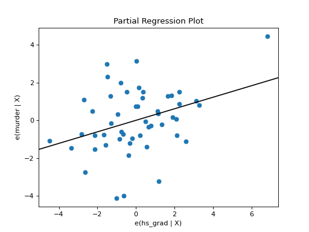

statsmodels.graphics.regressionplots.plot_partregress¶
-
statsmodels.graphics.regressionplots.plot_partregress(endog, exog_i, exog_others, data=None, title_kwargs={}, obs_labels=True, label_kwargs={}, ax=None, ret_coords=False, **kwargs)[source]¶ Plot partial regression for a single regressor.
- Parameters
endog (ndarray or string) – endogenous or response variable. If string is given, you can use a arbitrary translations as with a formula.
exog_i (ndarray or string) – exogenous, explanatory variable. If string is given, you can use a arbitrary translations as with a formula.
exog_others (ndarray or list of strings) – other exogenous, explanatory variables. If a list of strings is given, each item is a term in formula. You can use a arbitrary translations as with a formula. The effect of these variables will be removed by OLS regression.
data (DataFrame, dict, or recarray) – Some kind of data structure with names if the other variables are given as strings.
title_kwargs (dict) – Keyword arguments to pass on for the title. The key to control the fonts is fontdict.
obs_labels (bool or array-like) – Whether or not to annotate the plot points with their observation labels. If obs_labels is a boolean, the point labels will try to do the right thing. First it will try to use the index of data, then fall back to the index of exog_i. Alternatively, you may give an array-like object corresponding to the obseveration numbers.
labels_kwargs (dict) – Keyword arguments that control annotate for the observation labels.
ax (Matplotlib AxesSubplot instance, optional) – If given, this subplot is used to plot in instead of a new figure being created.
ret_coords (bool) – If True will return the coordinates of the points in the plot. You can use this to add your own annotations.
kwargs – The keyword arguments passed to plot for the points.
- Returns
fig (Matplotlib figure instance) – If ax is None, the created figure. Otherwise the figure to which ax is connected.
coords (list, optional) – If ret_coords is True, return a tuple of arrays (x_coords, y_coords).
Notes
The slope of the fitted line is the that of exog_i in the full multiple regression. The individual points can be used to assess the influence of points on the estimated coefficient.
See also
plot_partregress_gridPlot partial regression for a set of regressors.
Examples
Load the Statewide Crime data set and plot partial regression of the rate of high school graduation (hs_grad) on the murder rate(murder).
The effects of the percent of the population living in urban areas (urban), below the poverty line (poverty) , and in a single person household (single) are removed by OLS regression.
>>> import statsmodels.api as sm >>> import matplotlib.pyplot as plt
>>> crime_data = sm.datasets.statecrime.load_pandas() >>> sm.graphics.plot_partregress(endog='murder', exog_i='hs_grad', ... exog_others=['urban', 'poverty', 'single'], ... data=crime_data.data, obs_labels=False) >>> plt.show()
(Source code, png, hires.png, pdf)
More detailed examples can be found in the Regression Plots notebook on the examples page.
{kind=link}
{kind=link}